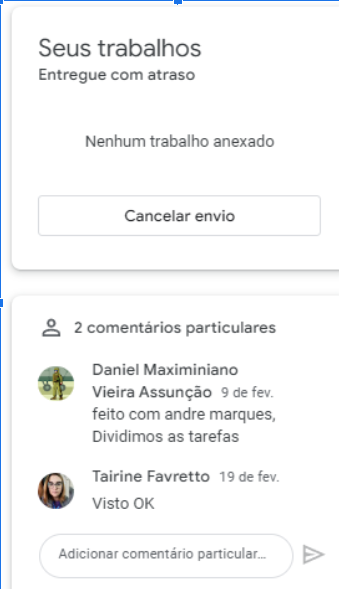

Meme sobre evolucionismo

a (as) habilidades desenvolvidas: Nessa atividade consegui aprender a usar uma IA para criar imagens ao meu gosto
o objetivo da atividade:Desenvolver a criatividade sobre o assunto evolucionismo e criar memes
o assunto:Evolucionismo
crítica pessoal:Gostei muito da atividade bem dinamica e tranquila de fazer
Relatório Circuitos

a (as) habilidades desenvolvidas:Aprendemos a mexer com um dispositivo que mede as tensões da pilha
o objetivo da atividade:Aprender a lidar com ferramentas de medição de tensao
o assunto:circuitos
crítica pessoal: Foi uma atividade dificil de se fazer os fios saindo toda hora mas foi legal, aprendemos bastante
Quimica Organica

a (as) habilidades desenvolvidas:No caso dessa atividade eu apenas fiquei com os calculos então eu aprendi as formulas e como a desenvolver
o objetivo da atividade:Resolver as questões de natureza
o assunto:química orgânica
crítica pessoal: os cálculos foram bem complicados de fazer mas aos poucos fui desenvolvendo
o objetivo da atividade:Aprender a lidar com ferramentas de medição de tensao
o assunto:circuitos
crítica pessoal: Foi uma atividade dificil de se fazer os fios saindo toda hora mas foi legal, aprendemos bastante
o objetivo da atividade:Resolver as questões de natureza
o assunto:química orgânica
crítica pessoal: os cálculos foram bem complicados de fazer mas aos poucos fui desenvolvendo